Excelencia que nos Enorgullece.
Ofrecemos diferentes presentaciones para adaptarnos a las necesidades de nuestros clientes. Estamos comprometidos con la satisfacción de nuestros clientes y la excelencia en la calidad de nuestros productos, garantizando siempre cortes bovinos frescos y de primera calidad.
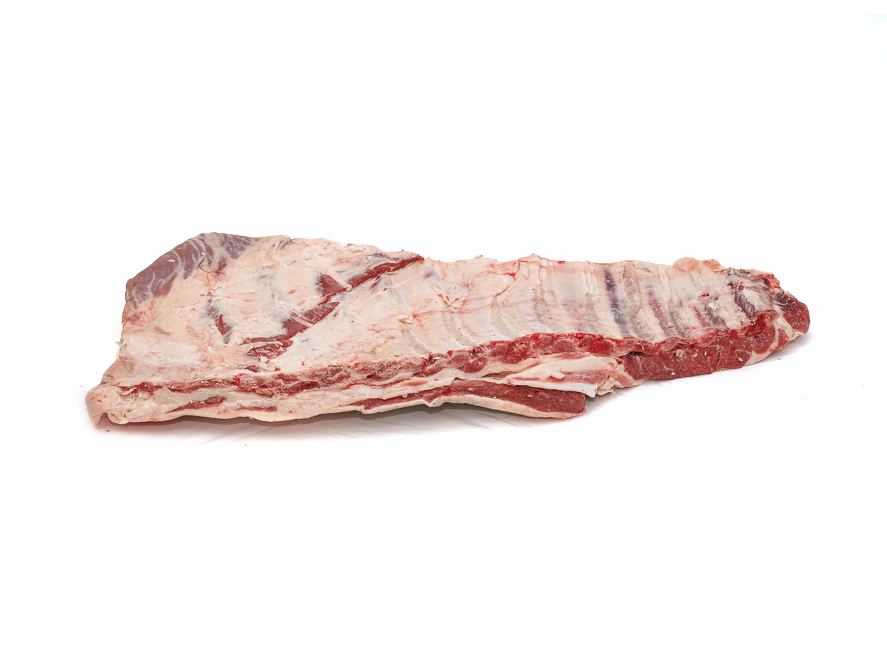
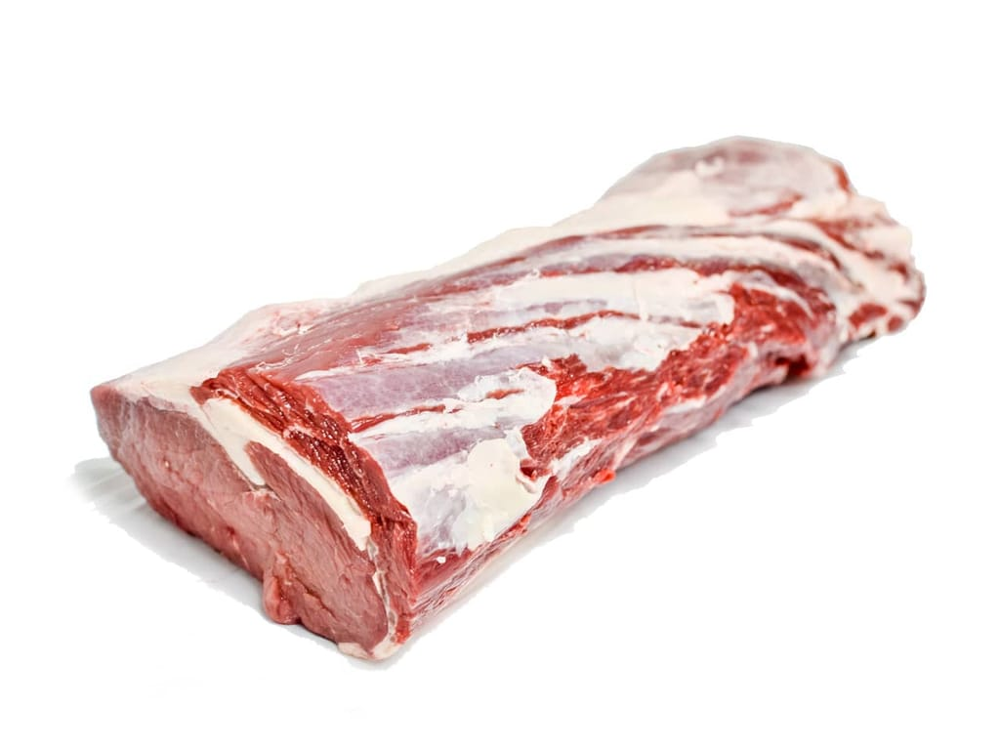
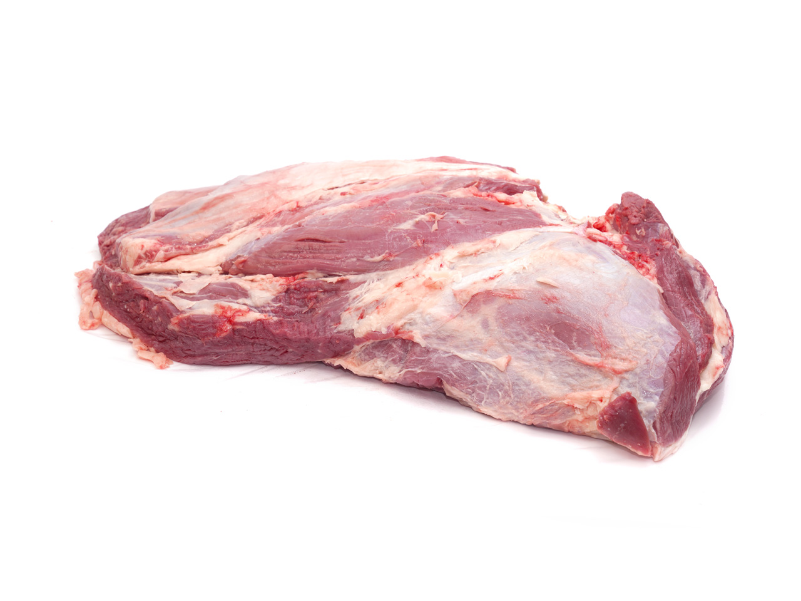
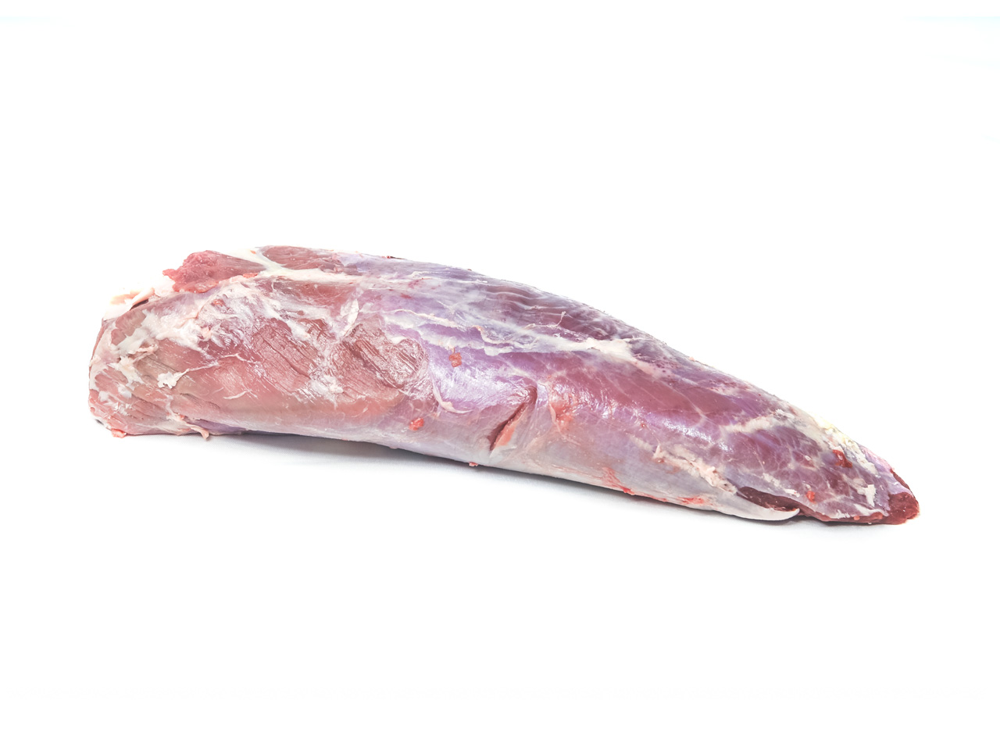
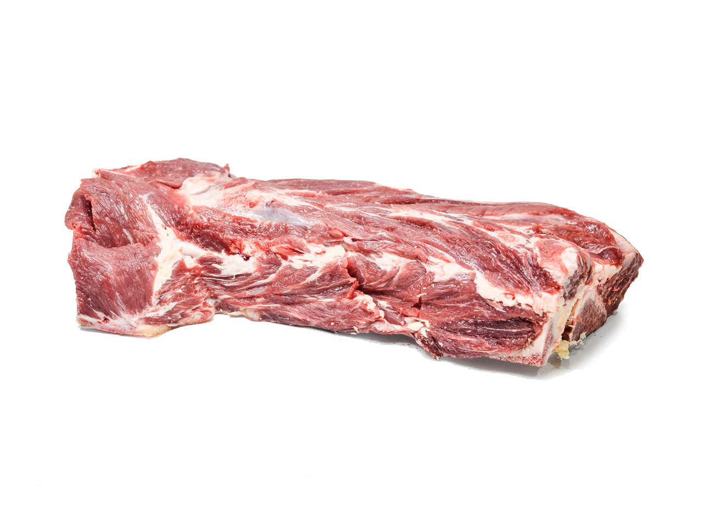
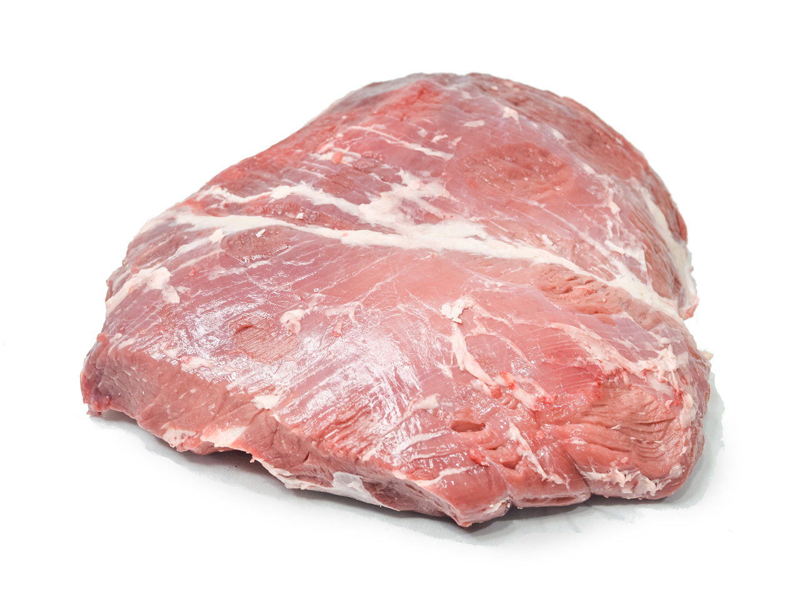
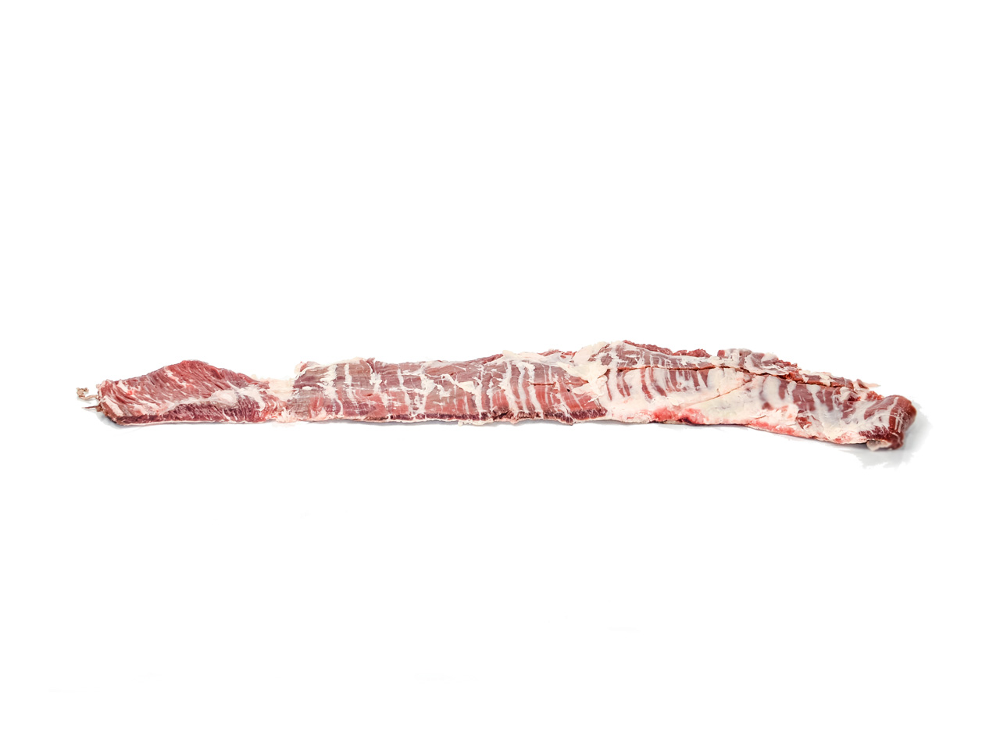
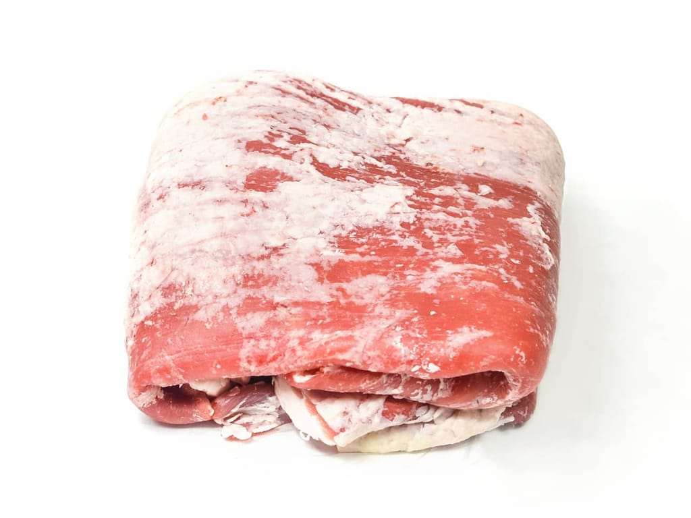
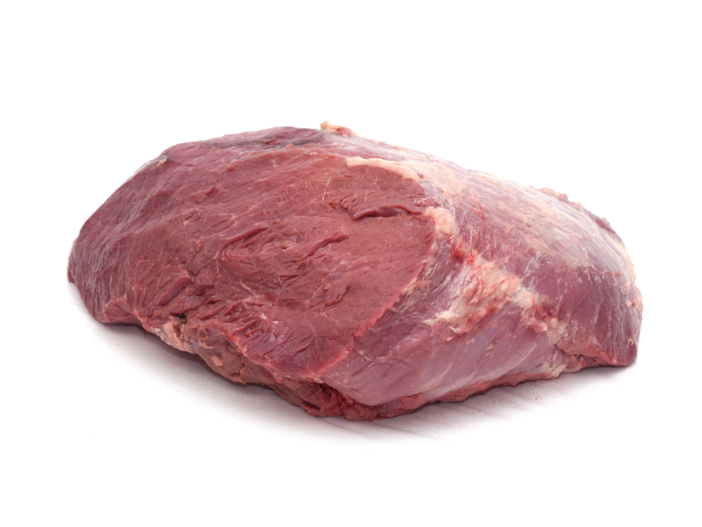
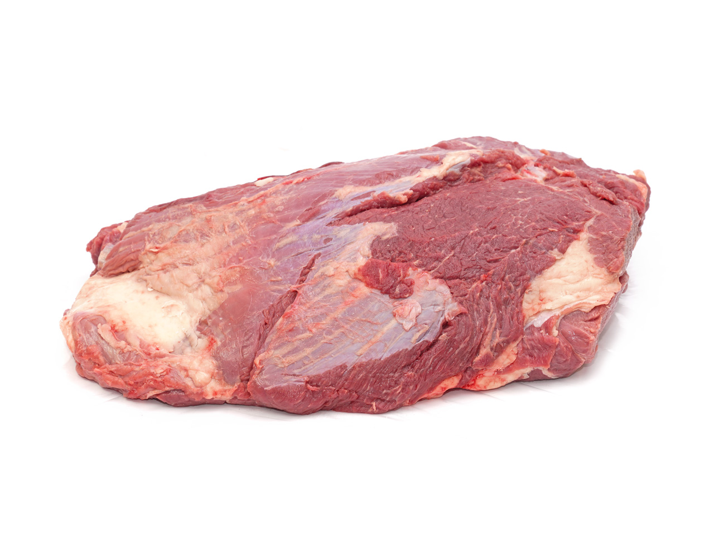
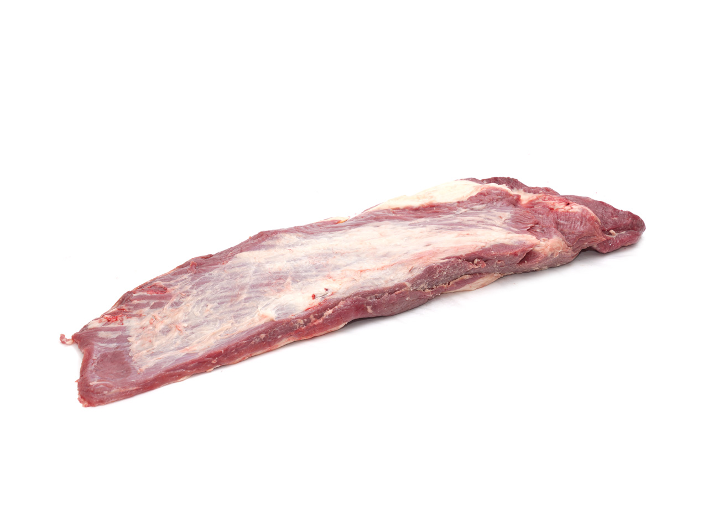
ENVÍOS A TODO EL PAÍS
DESPACHOS EN 24HS
RECIBÍ AL DIA SIGUIENTE
Rosario y Alrededores, Arequito
WHATSAPP: 0341-1233213